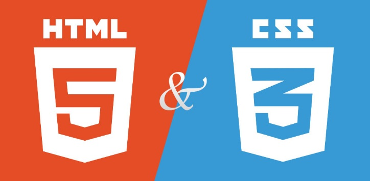
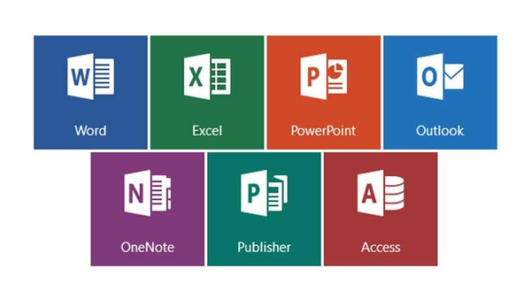

COMPÉTENCES
Débutante :



Bonne maîtrise :


Personal Skills
- RIGOUREUSE
- EMPATHIQUE
- ESPRIT D'ÉQUIPE
- ADAPTABILITÉE
- CURIOSITÉE
- MOTIVATION
HOBBIES
Cuisine, Lire, Documentaire...
TRAVAILLONS ENSEMBLE !
06 XX XX XX XX
brahimiaziza377@gmail.com
www.linkedin.com/in/aziza-brahimi
Permis B + Véhicule
BIOGRAPHIE PROFESSIONNELLLE
Après avoir effectuée divers emplois, j'ai décidé il y à quelque temps, d'effectuer une reconversion dans le numérique, un domaine pour lequel j'ai depuis longtemps une réelle attirance. Après une formation d'Assistante Numérique, qui ma permis de mettre le pied à l'étrier. Je suis maintenant fière et honorée de faire partie des apprenantes de la formation développeur web de l'école Simplon Grand Ouest.
FORMATIONS
Formation Développeur Web & Web mobile
Titre professionnel de niveau III "développeuse Web/Web mobile" Simplon Nantes Juillet 2020 - Mars 2021
Compétences visées :
1. Développer la partie front-end d'une application web
- Maquetter une application.
- Réaliser une interface utilisateur web statique et adaptable.
- Développer une interface utilisateur web dynamique.
- Réaliser une interface utilisateur avec une solution de gestion de contenu ou e-commerce.
2. Développer la partie back-end d'une application web
- Créer une base de données.
- Développer les composants d'accès aux données.
- Élaborer et mettre en œuvre des composants dans une application de gestion de contenu ou e-commerce.
Assistante Numérique – FORMAOUEST / Déc 2018 à Juin 2019
Conseillère de vente- CENTRE MDE / Sept. 2010 à Juin 2019
Formation Téléservice- AFPA / Février 2005
BEP Secrétariat- LYCEE JEAN JAURES / Sept. 2001 à Juin 2003
PARCOURS PROFESSIONNEL
Préparatrice de commande – YML Diffusion SAUTRON Oct-Déc 2019
Picking / Constitution du colis / Expédition marchandise
Stage Création de site web - CREIZIC - Avril 2019
Agent de Restauration - Lycée CARCOUET - 2014 à 2016
Distribution des repas / Maintenance et hygiène des locaux / Plonge/ Rangement, réception produits
Employée libre-service - L’étoile du Sud - Cannes- 2012
Mise en rayon/ encaissement/ Inventaire